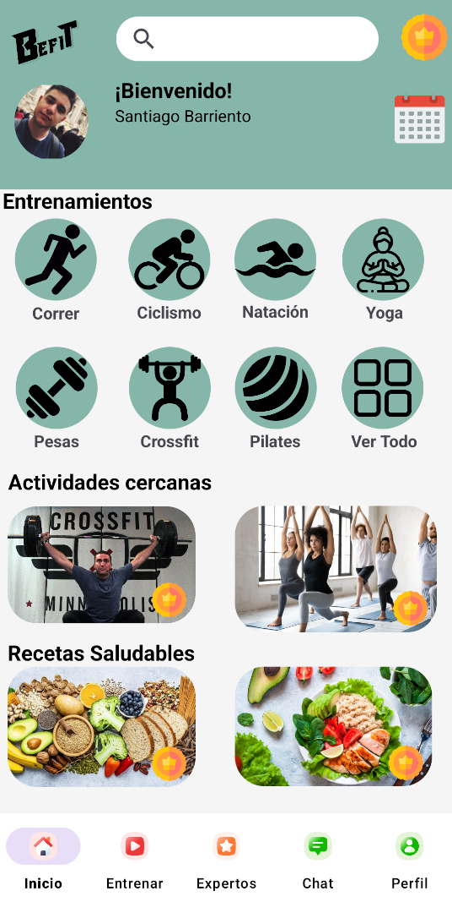
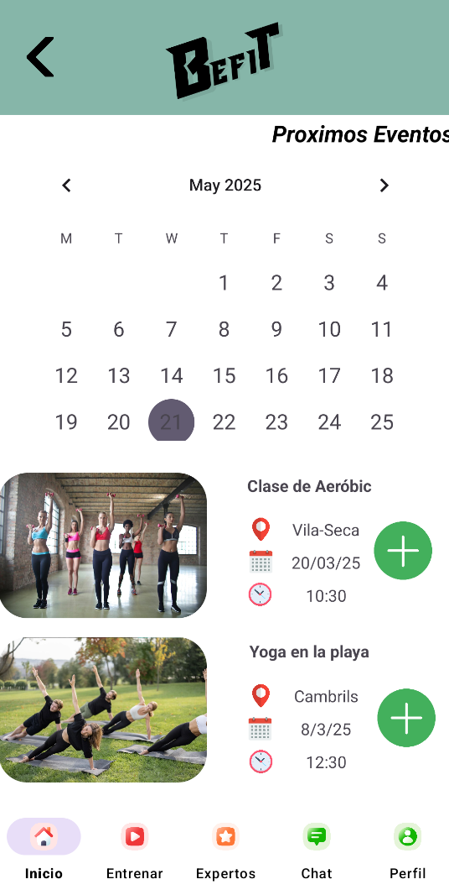
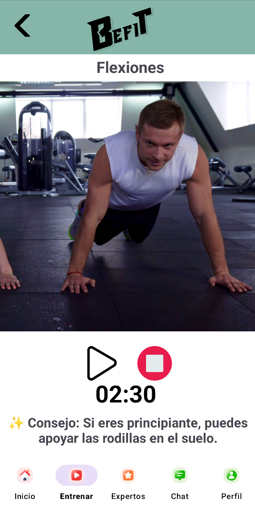
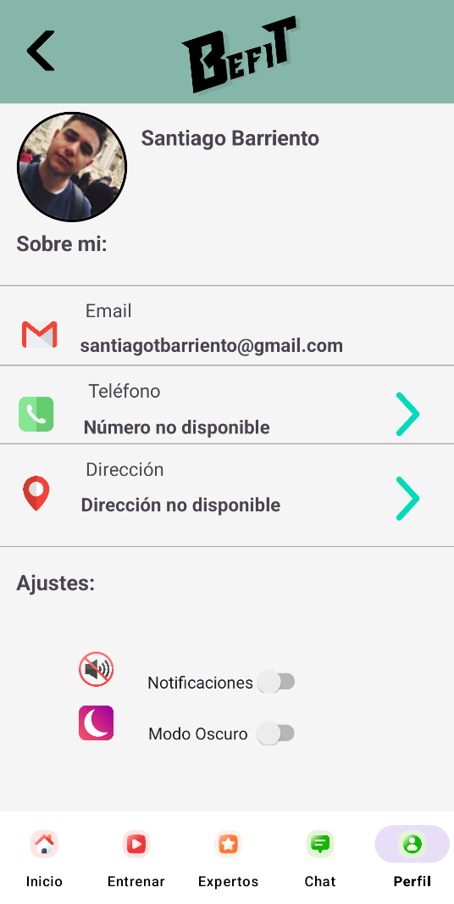

Organiza
Gestiona tus clases, entrenamientos y eventos desde un calendario centralizado.
BeFit es una aplicación Android diseñada para centralizar entrenamientos, clases, expertos y objetivos fitness en una experiencia sencilla y personalizada.

BeFit combina planificación, entrenamiento, calendario, profesionales y gestión de usuario para crear una experiencia fitness completa.
Gestiona tus clases, entrenamientos y eventos desde un calendario centralizado.
Sigue rutinas guiadas con ejercicios, vídeos, temporizadores y recomendaciones.
Descubre entrenadores y nutricionistas y encuentra el asesoramiento que necesitas.
Mantén tus objetivos y preferencias bajo control desde tu perfil personal.
La pantalla principal reúne la información más importante para que puedas acceder rápidamente a tus próximas clases, ejercicios recomendados, eventos y funcionalidades principales.

Organiza entrenamientos, clases grupales y citas con profesionales mediante un calendario pensado para mantener toda tu actividad organizada.

Cada ejercicio incorpora información visual, vídeos demostrativos y herramientas para controlar el tiempo de entrenamiento y mejorar la ejecución.
Explora perfiles de entrenadores y nutricionistas, consulta sus valoraciones y descubre diferentes opciones de asesoramiento.

Gestiona tus datos, preferencias y configuración desde un perfil personal diseñado para adaptar la aplicación a cada usuario.
BeFit fue desarrollado como una propuesta de aplicación fitness con el objetivo de ofrecer una experiencia digital completa para usuarios y profesionales del sector.
Una aplicación Android desarrollada con tecnologías orientadas a ofrecer una experiencia moderna y conectada.
Descubre el proyecto completo, consulta su código y conoce cómo fue construido.
Ver proyecto en GitHub